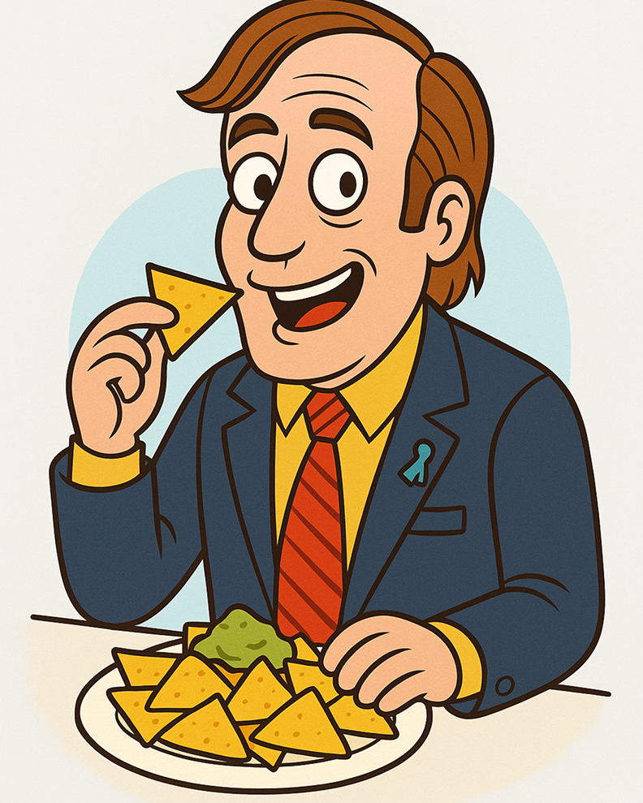
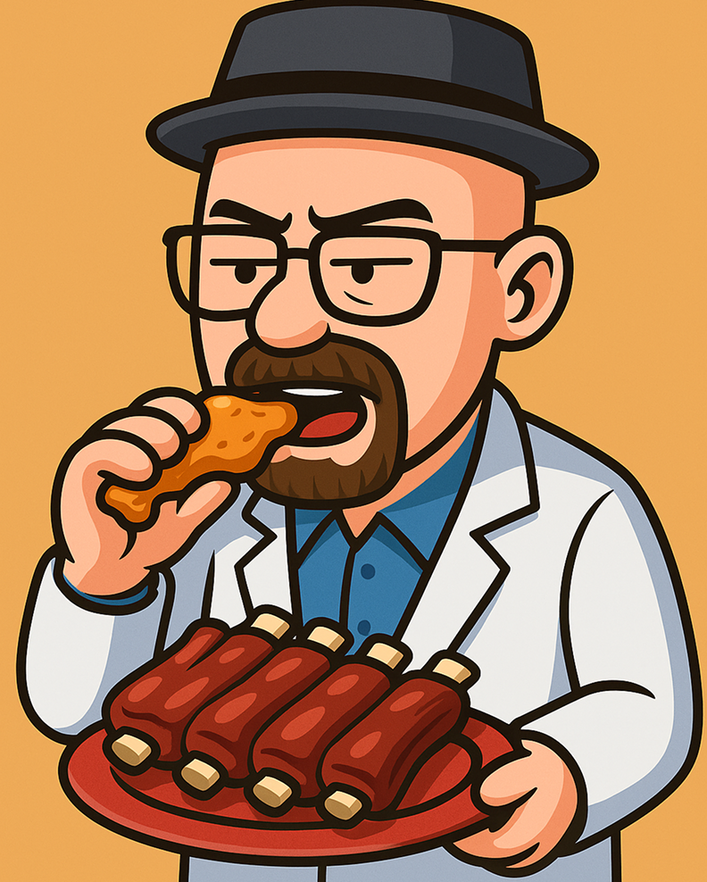
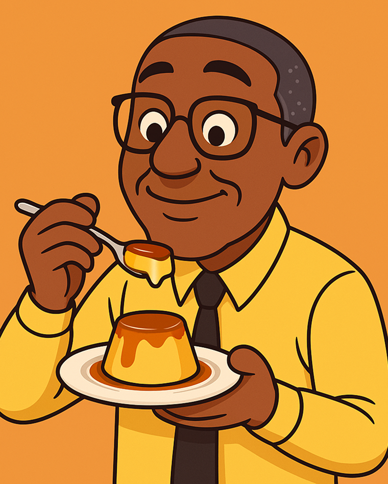

Entradas
El primer paso a la adicción

-
$20
Alitas de Crystal Meth
Crujientes y adictivas, servidas con una salsa “azul” de la casa.
-
$18
Nachos Salamanca
Se comen rápido, pero cuidado… siempre hay consecuencias.
-
$12
Guacamole Better Call Saul
Ideal para empezar la velada con una defensa impecable.
Platos Principales
La verdadera ‘cocina’ de Los Pollos Hermanos

-
$20
Pollo a la Gus Fring
Perfecto, impecable, sin una sola falla.
-
$22
Ribs al estilo Heisenberg
Tan intensas que parecen cocinadas en un laboratorio de química.
-
$20
Steak “Say My Name”
Jugoso, potente y servido con respeto absoluto.
Postres & Bebidas
Para terminar la jornada como un capo del cartel

-
$40
Flan del Desierto
Suave, dorado y con un caramelo tan dulce que parece cocinado bajo el sol de Albuquerque.
-
$30
Café Lalo Salamanca
Fuerte, con un “golpe” inesperado al final.
-
$90
Whisky Pollos Hermanos
Tan suave que hasta Mike se tomaría uno después del turno.